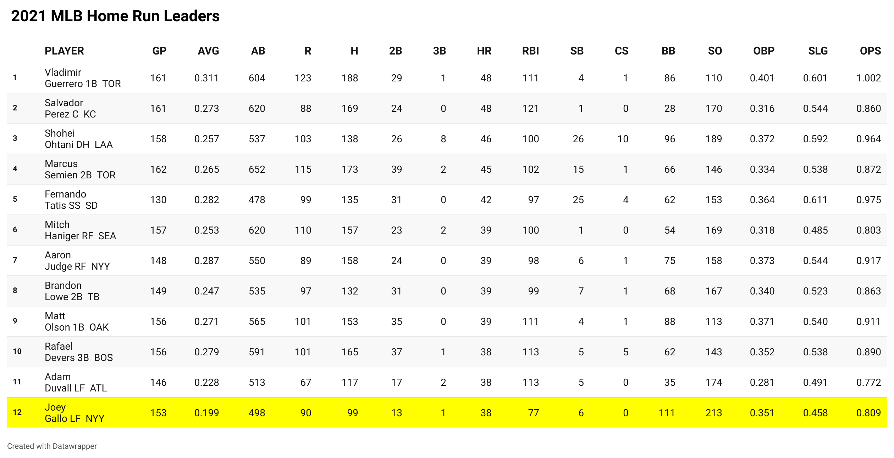
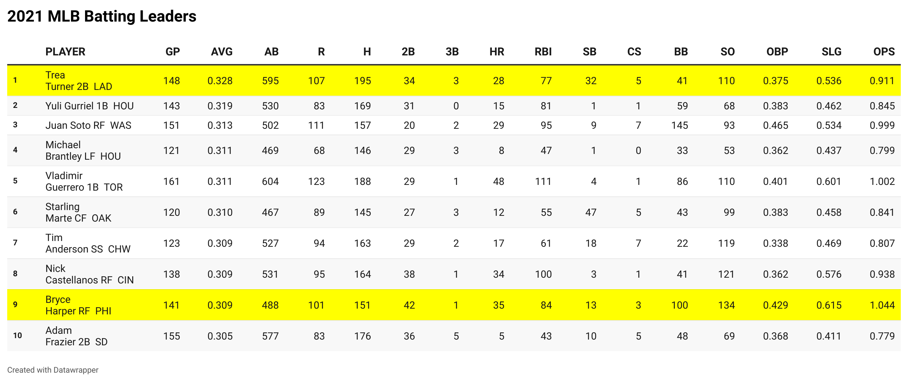

Yankees hitter DJ Lamahieu won the MLB batting title in 2016 and 2020.
For years we have used batting average to judge baseball players on how they are as hitters. The meaning behind this statistic is simple; the more hits you get, the higher batting average you will have. However, with advanced statistics and the overall change in the way the game is played, a new question is raised: is batting average still the best statistic to use when judging a hitter?
One statistic that is currently being argued to take the place of batting average is on base percentage, or OBP. On base percentage measures how often a batter reaches base per plate appearance. Not only does it take hits into account, but OBP also includes walks and hit-by-pitches. These other two factors are as valuable as getting a single, but not reflected in a player’s batting average, which could make OBP a viable option to replace batting average in the future.
Power hitting is more prominent in today’s game than it has ever been. Teams are looking for a player who can hit upwards of 30-40 home runs each season, and don’t really care about their batting average.
This chart shows the top 10 players across the league who hit the most home runs (with a three-way tie for 10th). Joey Gallo is highlighted because he received a lot of criticism this season for his low batting average and high number of strikeouts.
Let’s put his numbers into perspective. Gallo was tied for 10th in the league with 38 home runs this past season. His batting average was 0.199, the worst of the top 10. But, he was walked 111 times this season, the most out of these 10 hitters. His OBP was 0.361, which put him at 6th best of the players on this chart.
Even though he was the worst hitter in terms of batting average and strikeouts, Gallo was right in the middle of the list in terms of getting on base. This isn’t something you would think about unless you factored these extra statistics, like walks, into your judgement.
Another number valuable to judging the skill of a hitter in today’s baseball is the slugging percentage. This statistic gives more weight to extra base hits, meaning the more bases you get per hit, the higher your slugging percentage.
Slugging percentage itself does not factor in walks hit-by-pitches, but there is something called on base percentage plus slugging, or OPS, that factors in both walks and hit-by-pitches, and weighs its average based on how many bases you get on each hit.
This chart shows the 10 players with the highest batting average for the 2021 season. Trea Turner won the batting title, hitting 0.328 on the season. However, Bryce Harper, 9th on the list, ended up winning the National League MVP Award.
Why did the 9th best hitter in the league win the MVP for the National league? Well, Harper led the entire league in OPS, with a 1.044 rating. Turner’s was only 0.911, and Harper had much better OBP and slugging numbers as well.
Bryce Harper won the 2021 National League MVP Award in his third season with the Philadelphia Phillies.
Batting average has been the key in judging baseball hitters since the game was invented. But, with the introduction of newer statistics and overall changes in the game itself, there needs to be a change. It’s time for baseball fans to rely on other, more accurate statistics that can truly judge how good a certain player is. Batting average is on the verge of extinction.
Chart 1 shows all of the hitting statistics for the players with the most home runs in the MLB in the 2021 season. Home runs have become a statistic with higher value in the last 30 years of baseball with the rise of power hitting. These hitters are considered some of the most valuable and draw a high market should they become a free agent.
Chart 2 shows all of the hitting statistics for the players with the highest batting average in the MLB in the 2021 season. If we are going by the batting average statistic alone, these are the best hitters in baseball for this past season. The MLB awards the player with the highest average each season with the batting title.
All statistics from this piece were taken from MLB.com.